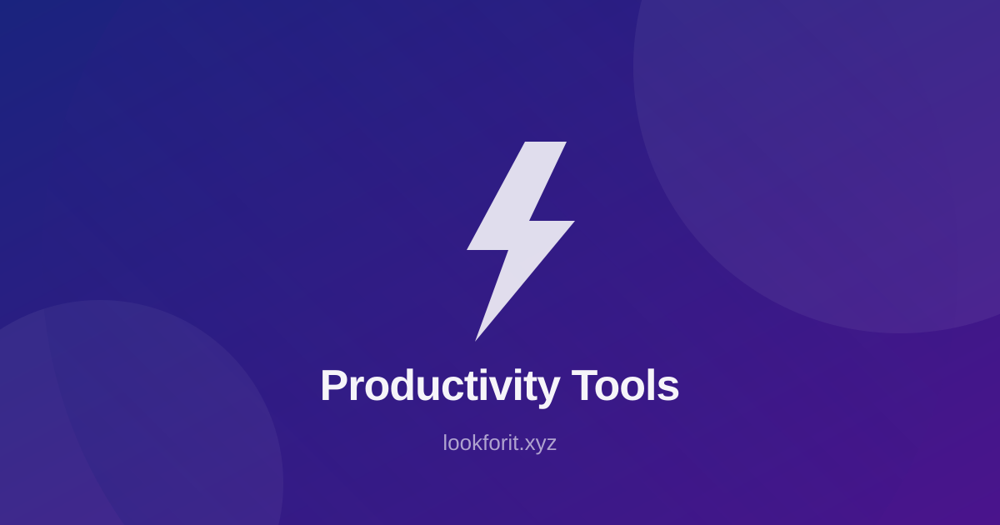

ChatGPT - AI assistant for writing and ideation.
Best AI Tools for Project Management 2026: Pick by the Job
AI is now the top reason buyers switch project tools. Pick the one where your work already lives, not the one with the longest feature list.
Published November 2026
Project management tools used to compete on boards, timelines and checklists. In 2026 they compete on AI. Capterra's PM Software Trends survey of 2,545 buyers found that 55 percent named new AI functionality as the top trigger for buying project management software. The tools have noticed: every major platform now writes task lists, summarises progress, plans the week and reminds the right person at the right time.
The result is a confusing market. Some tools add AI to the app you already use. Others build agents that take assigned work and act on it. A few are really calendars with an AI layer. The right answer depends less on which AI features look impressive and more on which tool your work already lives in — platform lock-in matters more than marginal feature differences.
This guide sorts the best AI project management tools by the job their AI actually does, with free tiers, pricing checked against vendor pages in October 2026, and a two-week trial plan. Where a price appears, confirm it on the vendor page before you buy: AI entitlements and limits change often.

What AI Actually Does in a Project Tool Now
Strip away the marketing and AI in project management does four jobs. First, it drafts: status updates, reports and task descriptions written from live project data, so nobody spends Friday afternoon writing a summary. Second, it schedules: it plans tasks into the calendar and protects focus time. Third, it acts: AI teammates and agents take assigned work, route it, and complete defined steps. Fourth, it answers: it searches your docs, tasks and decisions and answers questions about the project.
Most tools do one or two of these well. ClickUp Brain writes updates from live data, and its Super Agents take assigned work. Notion Agent works from your pages and connected apps. Asana ships more than 30 prebuilt AI Teammates, with Asana Dash sending work to the right one. Motion plans tasks into your calendar automatically. Knowing which job you need is the fastest way to shortlist: if your pain is reporting, you need drafting; if your pain is missed deadlines, you need scheduling; if your pain is volume, you need agents.
One warning from every honest comparison: the AI is only as good as the project data it can see. A tool with perfect AI and empty projects will do nothing for you. Pick the tool where your work already lives, and let the AI work on real tasks from day one.
The Shortlist
ClickUp AI — best for flexible small teams. ClickUp is the all-in-one workspace: tasks, docs, chat and goals in one place. Its AI layer generates task descriptions from brief prompts, summarises long threads and documents, creates status updates automatically and builds project templates from natural language. Brain AI is a $9 per user per month add-on, on top of paid plans starting at $7 a member a month for Unlimited on annual billing, and there is a Free Forever plan with trial AI. It is one of the cheapest AI upgrades for teams already on ClickUp. Explore it on our ClickUp AI tool page.
Notion AI — best for documentation-heavy teams. Notion shines when project management overlaps with documentation: product specs, meeting notes, decision logs and wikis. Notion Agent works from your pages and connected apps, and AI meeting notes arrive on the Business plan. Notion AI is now bundled into the Business plan at about $20 a member a month rather than sold as an add-on, and the free plan for individuals includes a trial of Notion AI. If your projects live inside your wiki, this is the natural pick. See our Notion AI tool page.
Asana AI — best for structured team projects. Asana suits cross-functional teams that want ready-made AI Teammates: more than 30 prebuilt teammates for common work, with AI Studio on paid plans. The Personal plan is free, and Starter starts at about $11 a user a month on annual billing. The one limit to budget for is the small included allowance of AI requests on lower plans. Asana is the pick when goals, structure and cross-team coordination matter more than flexibility.
Motion — best for automatic scheduling. Motion plans tasks into your calendar and re-plans them when the day changes. It is the pick when the problem is not tracking work but fitting it into real days. Pair it with your existing task tool rather than replacing it.
Monday.com AI — best for visual project tracking. Monday's AI suits teams that run on visual boards and want agents inside that view. It is a strong option for mid-size teams that already live on boards.
Reclaim.ai — best free AI calendar helper. Reclaim is free for one user and protects focus time on your calendar. It is the lightest way to try AI scheduling without changing tools.
Jira with Atlassian Intelligence, and Microsoft Planner — best for enterprise and Microsoft shops. Jira's Rovo Agents and Microsoft's Copilot-led planning suit large teams and organisations already on those stacks. For enterprise, the deciding factor is usually governance and existing licences, not AI features.
For the meeting side of project work, Fireflies.ai and Otter.ai turn meetings into searchable notes, and Airtable AI and Coda AI cover the database and doc-led side of tracking work.

Pick by Team Size and Where Work Lives
Small teams, 1 to 10 people: Notion AI or ClickUp AI. Both have free plans, both cover docs and tasks, and both keep the AI bill small. Choose Notion if your work is docs-first, ClickUp if you want one workspace for everything.
Mid-size teams: Asana AI or Monday.com AI. Asana wins on structure and ready-made teammates; Monday wins on visual boards. Both need a paid plan for the serious AI features, so budget for that.
Enterprise: Jira with AI, or Microsoft Project Copilot. Governance, permissions and existing licences decide here. Pilot with one team before a company-wide rollout.
One person, calendar chaos: Motion or Reclaim.ai. Do not buy a team platform to fix a personal scheduling problem.
The pattern is consistent across the comparisons we reviewed: the best tool is the one your team will actually open every day. A perfect AI in a tool nobody uses is worth less than a simple AI in the tool where the work already is. For the wider automation picture, read our guide to the best AI automation tools for small teams, and for the general stack, the best AI tools for small business.
Free Tiers and What AI Really Costs
Free tiers exist, but AI usage on them is limited. ClickUp's Free Forever plan includes trial AI, with Brain AI as a paid add-on. Notion is free for individuals with a trial of Notion AI. Asana's Personal plan is free for up to two users, with AI Teammates on Starter. Reclaim.ai is free for one user. Treat a free tier as a trial, not a permanent plan: count how many AI actions your team uses in a week, then price the paid tier on that number.
Watch the billing model. Many tools put agents on higher plans or charge per credit or request, so estimate what a busy month costs, not a quiet one. A tool that looks cheap at $7 a member a month can cost double once the AI add-on and the request allowance are included. Before you buy, ask three questions: what is included in the base plan, what is the AI add-on, and what happens when the included AI allowance runs out.
A Two-Week Trial Plan
Week 1: one real project. Pick a single active project and run it in the trial tool. Import the real tasks, docs and people. Use the AI for three jobs only: write the status update, summarise the longest thread, and plan next week. Judge it on those three jobs.
Week 2: measure and decide. Count the hours saved on reporting and planning, and count the corrections the AI needed. If the AI saves two hours a week and needs fewer than five corrections, it is worth paying for. If it saves nothing, the tool is wrong for your work, not the AI. Decide on that evidence, not on the demo.
For note-taking inside the trial, our guide to the best AI note-taking apps covers the capture side, and AI agents explained covers what agents can and cannot be trusted to do on their own.
Rich Media: Watch and Adapt
Use this embed slot for topical explainers, walkthroughs, or expert clips. Rich media can improve comprehension and session depth when used to clarify frameworks rather than distract from the article's purpose.
When adding video, keep these rules simple: summarize key points above the embed, add a text-based action checklist below it, and connect viewers to your next internal step. For example, point readers to automation tool selection, small business workflows, or note-taking apps based on intent stage.
FAQ
1) What is the best AI project management tool for a small team?
For a team of one to ten, ClickUp AI or Notion AI are the usual picks: ClickUp for an all-in-one workspace with a free plan, Notion for teams whose projects live inside documentation and wikis. Pick the one where your work already lives.
2) Is there a free AI project management tool?
Yes. ClickUp has a Free Forever plan with trial AI, Notion is free for individuals with a trial of Notion AI, Asana has a free Personal plan, and Reclaim.ai is free for one user. Free tiers limit AI usage, so check the allowance before you rely on it.
3) What does AI actually do in a project management tool?
Four jobs: drafting updates and reports from live project data, scheduling work onto the calendar, taking assigned work and acting on it through AI teammates or agents, and answering questions about the project from your docs and tasks.
4) How much does AI add to the price of a PM tool?
It varies. ClickUp Brain AI is a $9 per user per month add-on on top of paid plans from $7 a member a month. Notion AI is bundled into the Business plan at about $20 a member a month. Asana Starter starts at about $11 a user a month on annual billing. Prices were checked against vendor pages in October 2026 and change often.
5) Can AI replace a project manager?
No. AI handles the busywork: writing task lists, summarising progress, planning the week and reminding the right person. Decisions, priorities, trade-offs and difficult conversations still need a person.
Related Articles
- Best AI Automation Tools for Small Teams in 2026
- Best AI Tools for Small Business in 2026
- Best AI Note-Taking Apps in 2026
- AI Agents Explained: What They Do in 2026
Final Takeaway
AI is now the top reason buyers switch project tools, and the market has split into four jobs: drafting, scheduling, acting and answering. The best AI project management tool is not the one with the most features. It is the one where your work already lives, with the AI job you actually need, at a price you measured on a busy month. Shortlist ClickUp or Notion for a small team, Asana or Monday for a mid-size team, and Jira or Microsoft Planner for enterprise. Run the two-week trial on one real project, count the hours saved, and let that number decide.